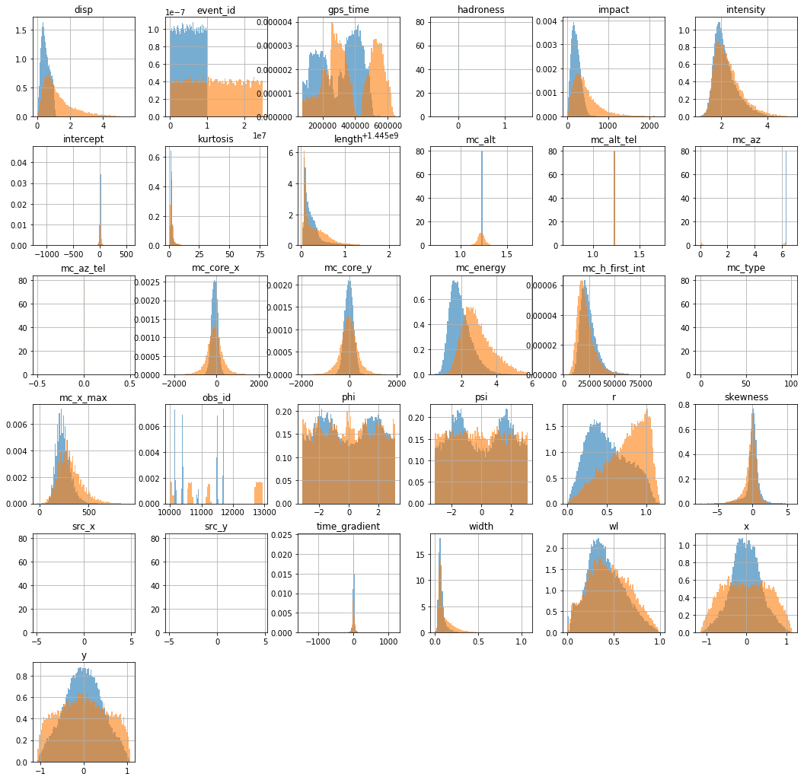
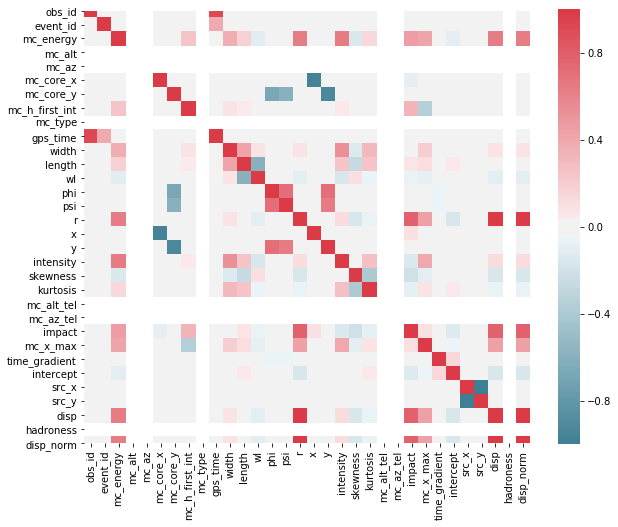
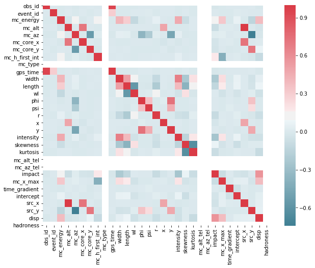

Data exploration and visusalisation with pandas¶
This is an example notebook to show how to use pandas for quick data exploration and results visualition based on a results hdf5 file.
Data from the cta-lstchain-extra repository will be used in this notebook¶
In case you do not have the reposity cloned;
git clone https://github.com/cta-observatory/cta-lstchain-extra
Import and data from cta-lstchain-extra¶
[1]:
# Assuming you are running the notebook from ~/cta-lstchain/notebooks
PATH_TO_LSTCHAIN_EXTRA = '../../cta-lstchain-extra/reco/sample_data/dl1/'
[2]:
import pandas as pd
import matplotlib.pyplot as plt
import numpy as np
%matplotlib inline
from IPython.core.display import display, HTML
display(HTML("<style>.container { width:98% !important; }</style>"))
[3]:
gammas_table = pd.read_hdf(PATH_TO_LSTCHAIN_EXTRA+'gamma_events_point_tiny.h5')
protons_table = pd.read_hdf(PATH_TO_LSTCHAIN_EXTRA+'proton_events_tiny.h5')
[4]:
gammas_table.describe()
[4]:
| obs_id | event_id | log_mc_energy | mc_alt | mc_az | mc_core_x | mc_core_y | mc_h_first_int | mc_type | gps_time | ... | mc_az_tel | impact | mc_x_max | time_gradient | intercept | src_x | src_y | disp | hadroness | disp_norm | |
|---|---|---|---|---|---|---|---|---|---|---|---|---|---|---|---|---|---|---|---|---|---|
| count | 53386.000000 | 5.338600e+04 | 53386.000000 | 53386.00000 | 53386.000000 | 53386.000000 | 53386.000000 | 53386.000000 | 53386.0 | 5.338600e+04 | ... | 53386.0 | 53386.000000 | 53386.000000 | 5.338600e+04 | 53386.000000 | 5.338600e+04 | 5.338600e+04 | 53386.000000 | 53386.0 | 53386.000000 |
| mean | 11027.225621 | 5.005307e+06 | 1.942175 | 1.22173 | 6.283185 | -85.030647 | -6.025231 | 24381.323851 | 0.0 | 1.445304e+09 | ... | 0.0 | 209.228140 | 243.016315 | -2.499263e-02 | 7.501868 | 4.103384e-13 | -2.892042e-06 | 0.512015 | 0.0 | 0.512015 |
| std | 657.878752 | 2.881663e+06 | 0.618715 | 0.00000 | 0.000000 | 144.385035 | 185.809033 | 8190.777433 | 0.0 | 1.219079e+05 | ... | 0.0 | 108.722932 | 69.255351 | 3.498411e+01 | 13.831399 | 1.514627e-28 | 8.470409e-22 | 0.256083 | 0.0 | 0.256083 |
| min | 10147.000000 | 1.060000e+02 | 0.488904 | 1.22173 | 6.283185 | -1077.981934 | -1498.965942 | 6754.455566 | 0.0 | 1.445077e+09 | ... | 0.0 | 1.251538 | -20.000000 | -1.454972e+03 | -1178.036708 | 4.103384e-13 | -2.892042e-06 | 0.002000 | 0.0 | 0.002000 |
| 25% | 10385.000000 | 2.500426e+06 | 1.495644 | 1.22173 | 6.283185 | -186.122799 | -132.039860 | 18699.628906 | 0.0 | 1.445190e+09 | ... | 0.0 | 129.576214 | 195.714279 | -1.078555e+01 | 5.024158 | 4.103384e-13 | -2.892042e-06 | 0.308793 | 0.0 | 0.308793 |
| 50% | 11495.000000 | 5.020252e+06 | 1.834652 | 1.22173 | 6.283185 | -83.920982 | -5.786307 | 22871.404297 | 0.0 | 1.445334e+09 | ... | 0.0 | 194.657316 | 236.666672 | -2.128057e-15 | 8.478582 | 4.103384e-13 | -2.892042e-06 | 0.474126 | 0.0 | 0.474126 |
| 75% | 11681.000000 | 7.505481e+06 | 2.286065 | 1.22173 | 6.283185 | 15.989897 | 119.391779 | 28295.680176 | 0.0 | 1.445410e+09 | ... | 0.0 | 275.212832 | 282.110817 | 1.087460e+01 | 10.539176 | 4.103384e-13 | -2.892042e-06 | 0.706576 | 0.0 | 0.706576 |
| max | 11715.000000 | 9.999901e+06 | 5.498749 | 1.22173 | 6.283185 | 707.513733 | 1480.202148 | 94513.046875 | 0.0 | 1.445554e+09 | ... | 0.0 | 1504.107425 | 775.039368 | 1.185533e+03 | 574.001388 | 4.103384e-13 | -2.892042e-06 | 1.157268 | 0.0 | 1.157268 |
8 rows × 32 columns
[5]:
protons_table.describe()
[5]:
| obs_id | event_id | log_mc_energy | mc_alt | mc_az | mc_core_x | mc_core_y | mc_h_first_int | mc_type | gps_time | ... | mc_alt_tel | mc_az_tel | impact | mc_x_max | time_gradient | intercept | src_x | src_y | disp | hadroness | |
|---|---|---|---|---|---|---|---|---|---|---|---|---|---|---|---|---|---|---|---|---|---|
| count | 21955.000000 | 2.195500e+04 | 21955.000000 | 21955.000000 | 21955.000000 | 21955.000000 | 21955.000000 | 21955.000000 | 21955.0 | 2.195500e+04 | ... | 21955.00000 | 21955.0 | 21955.000000 | 21955.000000 | 2.195500e+04 | 21955.000000 | 21955.000000 | 21955.000000 | 21955.000000 | 21955.0 |
| mean | 11534.561330 | 1.247381e+07 | 2.911804 | 1.220044 | 2.829394 | -84.203803 | -15.440749 | 21456.494256 | 101.0 | 1.445376e+09 | ... | 1.22173 | 0.0 | 445.691916 | 311.187421 | 5.206145e-02 | 11.355647 | 0.031035 | 0.133092 | 1.228603 | 1.0 |
| std | 1118.125683 | 7.206981e+06 | 0.860845 | 0.041990 | 3.025328 | 387.739689 | 383.831259 | 8323.951036 | 0.0 | 1.472970e+05 | ... | 0.00000 | 0.0 | 315.096697 | 118.826598 | 3.129434e+01 | 17.731755 | 1.184695 | 1.254799 | 0.890456 | 0.0 |
| min | 10000.000000 | 1.209000e+03 | 0.943108 | 1.047390 | 0.000030 | -2210.288330 | -1965.817627 | 3819.594971 | 101.0 | 1.445077e+09 | ... | 1.22173 | 0.0 | 1.611257 | -20.000000 | -5.115106e+02 | -366.784837 | -4.931283 | -4.930196 | 0.006992 | 1.0 |
| 25% | 10611.000000 | 6.224463e+06 | 2.288013 | 1.195133 | 0.075658 | -299.670029 | -226.048615 | 15796.670410 | 101.0 | 1.445262e+09 | ... | 1.22173 | 0.0 | 225.681059 | 226.666672 | -1.043272e+01 | 7.050645 | -0.668122 | -0.614807 | 0.590699 | 1.0 |
| 50% | 11228.000000 | 1.241831e+07 | 2.762023 | 1.219935 | 0.223775 | -82.851608 | -13.305991 | 19832.361328 | 101.0 | 1.445341e+09 | ... | 1.22173 | 0.0 | 370.896598 | 296.808502 | 4.356801e-15 | 10.434372 | 0.014626 | 0.142691 | 0.971793 | 1.0 |
| 75% | 12785.000000 | 1.872331e+07 | 3.412117 | 1.245360 | 6.197453 | 127.354301 | 200.579781 | 25314.792969 | 101.0 | 1.445521e+09 | ... | 1.22173 | 0.0 | 580.271834 | 378.164993 | 1.056010e+01 | 15.502840 | 0.731838 | 0.894450 | 1.615544 | 1.0 |
| max | 12937.000000 | 2.499981e+07 | 5.775583 | 1.394943 | 6.283178 | 2193.235840 | 1934.883911 | 79474.773438 | 101.0 | 1.445647e+09 | ... | 1.22173 | 0.0 | 2273.305676 | 920.000000 | 4.849908e+02 | 491.442058 | 4.902331 | 4.734571 | 5.641257 | 1.0 |
8 rows × 31 columns
[6]:
hist_opt = {'figsize':(18,18), 'density':True, 'alpha':0.6, 'bins':80}
cols = gammas_table.columns.intersection(protons_table.columns)
axes = gammas_table[cols].dropna().hist(label='diffuse gammas', **hist_opt);
axes = protons_table[cols].dropna().hist(ax=axes.ravel()[:min(len(protons_table.columns),len(gammas_table.columns))],
label='protons', **hist_opt);

Correlation matrices¶
[7]:
import seaborn as sns
[8]:
# Gammas
f, ax = plt.subplots(figsize=(10, 8))
features = gammas_table.columns
corr = gammas_table[features].corr()
sns.heatmap(corr,
mask=np.zeros_like(corr, dtype=np.bool),
cmap=sns.diverging_palette(220, 10, as_cmap=True),
square=True,
ax=ax);

[9]:
# Protons
f, ax = plt.subplots(figsize=(10, 8))
features = protons_table.columns
corr = protons_table[features].corr()
sns.heatmap(corr,
mask=np.zeros_like(corr, dtype=np.bool),
cmap=sns.diverging_palette(220, 10, as_cmap=True),
square=True,
ax=ax);

[ ]: